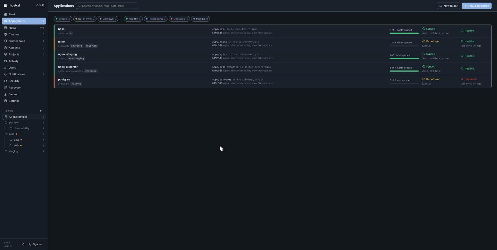
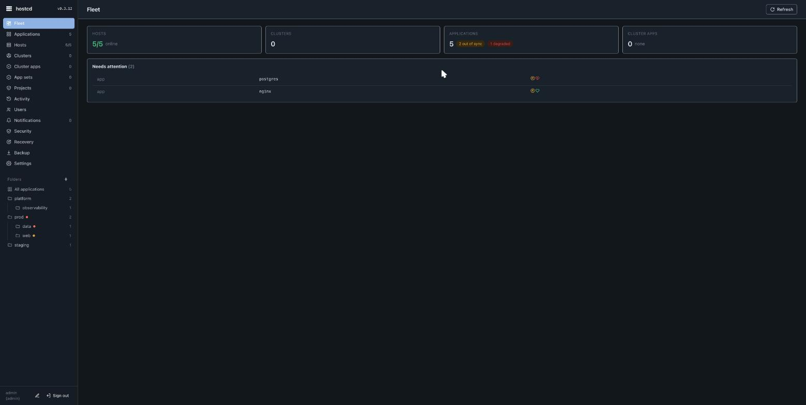

hostcd — overview
hostcd keeps every Linux server aligned with Git: continuous drift detection, self-healing, and safe, previewed rollouts for VMs and bare metal — without Kubernetes and without any inbound connection to the managed hosts.
What it is
An application in hostcd points at a folder in a Git repository and at a set of hosts (by name or by label). The control plane (hostcd-server) renders that folder per host, compares the result to what is actually on the host, and shows any difference as a diff. You then sync (apply), roll back, or prune from a web UI or API. Each host runs a small agent that only dials out over HTTPS, so nothing listens on a managed host.
The technical analogy is "Argo CD for plain hosts", but the job is narrower and concrete: your Linux fleet continuously reconciled against a Git repo, the way Argo CD reconciles a Kubernetes cluster.

Who it is for
Teams that have outgrown running Ansible by hand or on cron, but do not want to adopt Puppet/Rudder, move to NixOS, or pull ordinary servers into Kubernetes just to get GitOps. It targets small-to-medium Linux fleets (Ubuntu/Debian and RHEL/Rocky are the supported families).
How it works
git (GitLab / GitHub / Gitea)
│ fetch, webhook
┌───────────▼───────────┐
│ hostcd-server │ UI + API, renders manifests per host,
│ (one per fleet) │ sync operations, history, rollback
└───────────▲───────────┘
long-poll HTTPS │ (hosts only dial out, nothing listens on them)
┌──────────────┬────┴─────────┬──────────────┐
hostcd-agent hostcd-agent hostcd-agent hostcd-agent
web-1 web-2 db-1 stg-web-1
- Pull, not push. Agents long-poll the server; the server never connects into a host. No inbound SSH or open agent port is required.
- Per-host rendering. A single application folder renders differently per host using host facts (hostname, OS id/version/family) and labels, so one manifest serves a heterogeneous fleet.
- Preview before apply. Drift is shown as a diff first; applying is an explicit operation (or automated per app), with full history and one-click rollback.

Editions
| Edition | What you get |
|---|---|
| Community (free, BSL 1.1) | The full core: git → preview → rollout → audit, pull agent, all system resource kinds, drift/self-heal, backup/restore, upgrade/rollback. |
| Team (licensed) | Approval gates, outbound notifications (webhooks), audit export, a raised host limit. |
| Enterprise (licensed) | SSO (SAML/OIDC), SCIM, Postgres-backed HA, Vault Transit secret sealing. |
The supported release ships the core only. See concepts for the model, install to set it up, security for the trust model, and operations for day-two tasks.
This page is also available as Markdown, indexed in llms.txt for AI assistants.